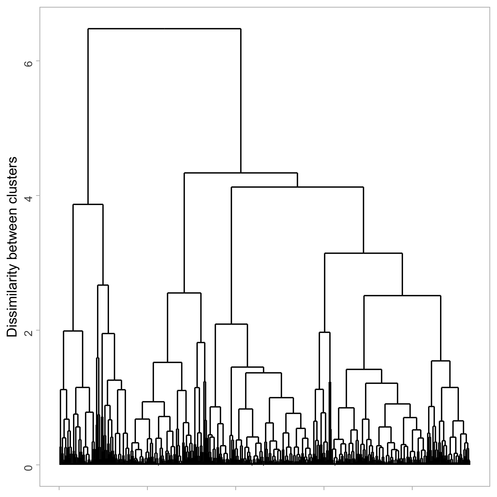
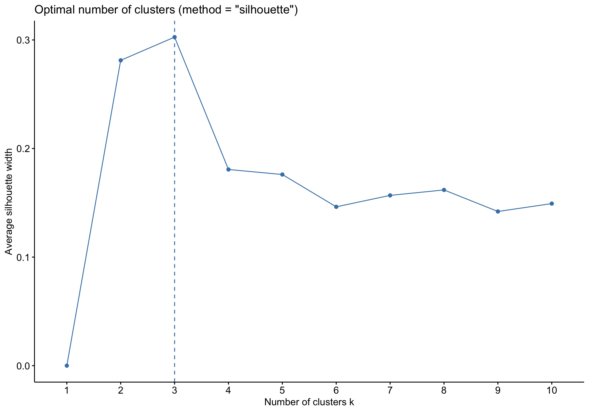

Unsupervised learning: hierarchical clustering
Background
The big picture
- \(k\)-means clustering: partition the observations into a pre-specified number of clusters
Hierarchical clustering: does not require commitment to a particular choice of clusters
In fact, we end up with a tree-like visual representation of the observations, called a dendrogram
This allows us to view at once the clusterings obtained for each possible number of clusters
Common approach: agglomerative (bottom-up) hierarchical clustering: build a dendrogram starting from the leaves and combining clusters up to the trunk
There’s also divisive (top-down) hierarchical clustering: start with one large cluster and then break the cluster recursively into smaller and smaller pieces
The big picture: visually
Data: NBA player statistics per 100 possessions (2025-26 regular season)
library(tidyverse)
theme_set(theme_light())
nba_players <- read_csv("https://raw.githubusercontent.com/36-SURE/2026/main/data/nba_players.csv")
glimpse(nba_players)Rows: 465
Columns: 33
$ rk <dbl> 41, 457, 393, 278, 329, 206, 187, 82, 452, 225, 170, 287,…
$ player <chr> "A.J. Green", "A.J. Lawson", "AJ Johnson", "Aaron Gordon"…
$ age <dbl> 26, 25, 21, 30, 29, 26, 27, 19, 22, 22, 23, 39, 31, 20, 2…
$ team <chr> "MIL", "TOR", "2TM", "DEN", "HOU", "IND", "OKC", "UTA", "…
$ pos <chr> "SG", "SG", "SG", "PF", "PG", "SF", "SG", "SF", "SG", "C"…
$ g <dbl> 78, 24, 48, 36, 57, 45, 65, 72, 8, 71, 57, 45, 56, 48, 72…
$ gs <dbl> 68, 0, 0, 33, 1, 42, 21, 61, 1, 18, 16, 13, 0, 48, 72, 79…
$ mp <dbl> 2270, 226, 454, 1005, 781, 1335, 1414, 1988, 241, 1234, 1…
$ fg <dbl> 5.7, 7.3, 5.9, 9.6, 6.7, 7.5, 7.9, 9.3, 5.5, 5.1, 9.4, 6.…
$ fga <dbl> 13.4, 16.8, 18.3, 19.3, 16.1, 18.2, 18.3, 21.1, 13.4, 8.6…
$ fg_percent <dbl> 0.424, 0.436, 0.324, 0.497, 0.417, 0.414, 0.431, 0.443, 0…
$ x3p <dbl> 5.0, 4.1, 1.2, 3.0, 4.3, 3.7, 3.3, 3.2, 3.5, 0.1, 2.0, 3.…
$ x3pa <dbl> 12.0, 9.7, 5.9, 7.6, 10.9, 9.9, 9.2, 9.4, 8.6, 0.2, 5.8, …
$ x3p_percent <dbl> 0.419, 0.422, 0.211, 0.389, 0.394, 0.379, 0.356, 0.344, 0…
$ x2p <dbl> 0.6, 3.2, 4.7, 6.7, 2.4, 3.8, 4.6, 6.1, 2.0, 5.0, 7.4, 3.…
$ x2pa <dbl> 1.4, 7.1, 12.4, 11.7, 5.2, 8.4, 9.1, 11.7, 4.7, 8.4, 13.6…
$ x2p_percent <dbl> 0.469, 0.455, 0.378, 0.568, 0.463, 0.455, 0.508, 0.522, 0…
$ e_fg_percent <dbl> 0.612, 0.558, 0.358, 0.574, 0.550, 0.517, 0.521, 0.520, 0…
$ ft <dbl> 1.1, 3.0, 3.5, 6.1, 2.2, 3.3, 1.8, 1.6, 1.8, 3.1, 4.6, 1.…
$ fta <dbl> 1.3, 3.9, 4.2, 7.9, 2.6, 4.0, 2.5, 2.1, 2.0, 4.4, 5.3, 1.…
$ ft_percent <dbl> 0.855, 0.778, 0.850, 0.767, 0.854, 0.829, 0.736, 0.750, 0…
$ orb <dbl> 0.6, 1.9, 1.5, 2.5, 0.8, 1.7, 1.4, 2.5, 1.2, 5.0, 1.3, 2.…
$ drb <dbl> 4.0, 7.3, 4.3, 7.7, 2.9, 4.9, 5.4, 4.7, 3.7, 7.0, 4.9, 8.…
$ trb <dbl> 4.6, 9.3, 5.7, 10.1, 3.7, 6.7, 6.8, 7.1, 4.9, 12.0, 6.2, …
$ ast <dbl> 3.3, 1.5, 4.9, 4.7, 3.8, 3.1, 3.7, 3.1, 3.7, 1.3, 6.8, 5.…
$ stl <dbl> 0.8, 2.6, 1.1, 1.0, 1.7, 0.9, 2.1, 1.4, 1.8, 1.2, 2.3, 1.…
$ blk <dbl> 0.2, 0.9, 0.3, 0.5, 0.3, 0.8, 1.0, 1.2, 0.2, 3.2, 0.6, 2.…
$ tov <dbl> 1.6, 1.3, 3.1, 1.8, 2.4, 2.2, 2.8, 2.5, 1.2, 2.2, 2.7, 2.…
$ pf <dbl> 3.9, 5.8, 3.1, 3.0, 4.6, 4.4, 2.8, 4.6, 5.3, 6.0, 3.9, 2.…
$ pts <dbl> 17.5, 21.8, 16.7, 28.3, 20.0, 22.1, 20.9, 23.4, 16.3, 13.…
$ o_rtg <dbl> 118, 117, 88, 127, 117, 107, 104, 105, 119, 123, 118, 116…
$ d_rtg <dbl> 123, 111, 123, 118, 117, 121, 109, 124, 121, 114, 109, 11…
$ awards <chr> NA, NA, NA, NA, NA, NA, NA, NA, NA, NA, "6MOY-5", NA, NA,…General setup
Given a dataset with \(p\) variables (columns) and \(n\) observations (rows) \(x_1,\dots,x_n\)
Compute the distance/dissimilarity between observations
e.g. Euclidean distance between observations \(i\) and \(j\)
\[d_{ij} = \sqrt{(x_{i1}-x_{j1})^2 + \cdots + (x_{ip}-x_{jp})^2}\]
What are the distances between these players using x3pa (3-point attempts) and trb (total rebounds)?
nba_players |>
ggplot(aes(x = x3pa, y = trb)) +
geom_point(size = 4, alpha=0.7)
Remember to standardize!
nba_players <- nba_players |>
mutate(
std_x3pa = as.numeric(scale(x3pa)),
std_trb = as.numeric(scale(trb))
)
nba_players |>
ggplot(aes(x = std_x3pa, y = std_trb)) +
geom_point(size = 4) +
coord_fixed()
Compute the distance matrix using dist()
- Compute pairwise Euclidean distance
players_dist <- nba_players |>
select(std_x3pa, std_trb) |>
dist()Returns an object of
distclass… but not amatrixConvert to a matrix, then set the row and column names:
players_dist_matrix <- as.matrix(players_dist)
rownames(players_dist_matrix) <- nba_players$player
colnames(players_dist_matrix) <- nba_players$player
players_dist_matrix[1:4, 1:4] A.J. Green A.J. Lawson AJ Johnson Aaron Gordon
A.J. Green 0.000000 1.3720848 1.691405 1.8662900
A.J. Lawson 1.372085 0.0000000 1.396882 0.6103259
AJ Johnson 1.691405 1.3968817 0.000000 1.2326878
Aaron Gordon 1.866290 0.6103259 1.232688 0.0000000Hierarchical clustering
Hierarchical clustering in simple terms
Key idea: Builds a hierarchy in a agglomerative/bottom-up fashion
Algorithm (informal version)
Start with each point in its own cluster
Identify the closest two clusters and merge them
Repeat
Ends when all points are in a single cluster
Toy example

Toy example


Hierarchical clustering
Start with all observations in their own cluster
. . .
Step 1: Compute the pairwise dissimilarities between each cluster
e.g., distance matrix on previous slides (using Euclidean distance)
In practice, we can also try out different types of distance
. . .
- Step 2: Identify the pair of clusters that are least dissimilar
. . .
- Step 3: Fuse these two clusters into a new cluster
. . .
- Repeat Steps 1 to 3 until all observations are in the same cluster
. . .
“Bottom-up”, agglomerative clustering that forms a tree/hierarchy of merging
No mention of any randomness! And no mention of the number of clusters \(k\)!
Dissimilarity between clusters
- We know how to compute distance/dissimilarity between two observations
. . .
- But what about distance/dissimilarity between a cluster and an observation, or between two clusters?
. . .
- We need to choose a linkage function. Clusters are built up by linking them together
Linkages
- Linkage: function \(d(C_1, C_2)\) that takes two groups (clusters) \(C_1\) and \(C_2\) and returns a dissimilarity score between them
. . .
- First, compute all pairwise dissimilarities between the observations in the two clusters (i.e., compute the distance matrix between observations)
. . .
Agglomerative clustering, given the linkage:
Start with all points in their own cluster
Until there is only one cluster, repeatedly: merge the two clusters \(C_1\), \(C_2\) such that \(d(C_1, C_2)\) is the smallest
. . .
- There are different types of linkage: complete, single, average,…
Complete linkage
In complete linkage, we use the largest dissimilarity between two points of different clusters (maximal inter-cluster dissimilarity) \[d_\text{complete}(C_1, C_2) = \underset{i \in C_1, j \in C_2}{\text{max}} d_{ij}\]
Below, the complete linkage score \(d_\text{complete}(C_1, C_2)\) is the distance of the furthest pair

Single linkage
In single linkage, we use the smallest dissimilarity between two points of different clusters (minimal inter-cluster dissimilarity) \[d_\text{single}(C_1, C_2) = \underset{i \in C_1, j \in C_2}{\text{min}} d_{ij}\]
Below, the single linkage score \(d_\text{single}(C_1, C_2)\) is the distance of the closest pair

Average linkage
In average linkage, we use the average dissimilarity over all points of different clusters (mean inter-cluster dissimilarity) \[d_\text{average}(C_1, C_2) = \frac{1}{|C_1||C_2|} \sum_{i \in C_1, j \in C_2} d_{ij}\]
In short, the average linkage score \(d_\text{average}(C_1, C_2)\) is the average distance across all pairs (of different clusters)

Complete linkage example
Use
hclust()with adist()objectUse
completelinkage by default
nba_complete <- players_dist |>
hclust(method = "complete")Use
cutree()to return cluster labelsReturns compact clusters (similar to \(k\)-means)
nba_players |>
mutate(
cluster = as.factor(cutree(nba_complete, k = 3))
) |>
ggplot(aes(x = std_x3pa, y = std_trb,
color = cluster)) +
geom_point(size = 4) +
ggthemes::scale_color_colorblind() +
theme(legend.position = "bottom")
What are we cutting? Dendrograms
Use the ggdendro package (instead of plot())
library(ggdendro)
nba_complete |>
ggdendrogram(labels = FALSE,
leaf_labels = FALSE,
theme_dendro = FALSE) +
labs(y = "Dissimilarity between clusters") +
theme(axis.text.x = element_blank(),
axis.title.x = element_blank(),
panel.grid = element_blank())Each leaf is one observation
Height of branch indicates dissimilarity between clusters
- (After first step) Horizontal position along x-axis means nothing

Some notes on dendrograms
- Dendrograms are often misinterpreted
. . .
- Conclusions about the distance/dissimilarity between two observations should not be implied by their relationship on the horizontal axis!
. . .
- Rather, the height at which an observation joins a cluster indicates the distance between that observation and the cluster with which it is merged
Toy example
Consider observations 9 and 2. They appear close on the dendrogram
But their closeness on the dendrogram imply they are approximately the same distance measure from the cluster that they are fused to (observations 5, 7, 8)
It by no means implies that observation 9 and 2 are close to one another.

Cut dendrograms to obtain cluster labels
Specify the height to cut with h (instead of k)

For example, cutree(nba_complete, h = 4)

Single linkage example
Change the method argument to single

Results in a chaining effect

Average linkage example
Change the method argument to average

Closer to complete but varies in compactness

Shortcomings of different types of linkage
Single linkage suffers from chaining
In order to merge two groups, only need one pair of points to be close, irrespective of all others
Therefore clusters can be too spread out, and not compact enough
. . .
Complete linkage avoids chaining, but suffers from crowding
Because its score is based on the maximum dissimilarity between pairs, a point can be closer to points in other clusters than to points in its own cluster
Clusters are compact, but not far enough apart
. . .
Average linkage tries to strike a balance
It uses average pairwise dissimilarity, so clusters tend to be relatively compact and relatively far apart
But it is not clear what properties the resulting clusters have when we cut an average linkage tree at given height.
Single and complete linkage trees each has simple interpretations
Complete linkage interpretation
Cutting the tree at \(h = 5\) gives the clustering assignments marked by colors
Cut interpretation: for each point \(x_i\), every other point \(x_j\) in its cluster satisfies \(d_{ij} \le 5\)

Single linkage interpretation
Cutting the tree at \(h = 0.9\) gives the clustering assignments marked by colors
Cut interpretation: for each point \(x_i\), there is another point \(x_j\) in its cluster satisfies \(d_{ij} \le 0.9\)

More linkage functions
Centroid linkage: Computes the dissimilarity between the centroid for cluster 1 and the centroid for cluster 2
i.e. distance between the averages of the two clusters
use
method = centroid
. . .
Ward’s linkage: Merges a pair of clusters to minimize the within-cluster variance (damage cluster homogeneity the least)
i.e. aim is to minimize the objection function from \(k\)-means
can use
ward.Dorward.D2(different algorithms)
Post-clustering analysis
For context, how does position relate clustering results?
Two-way table to compare the clustering assignments with player positions
(What’s the way to visually compare these two variables?)
table("Cluster" = cutree(nba_complete, k = 3), "Position" = nba_players$pos) Position
Cluster C PF PG SF SG
1 0 2 31 16 39
2 29 71 51 60 86
3 55 13 2 7 3- Takeaway: positions tend to fall within particular clusters
Examples of clustering use in other sports
Important: You can be strategic about leaving variables out of your clustering analysis to see if groups naturally differ in some meaningful statistic without data leakage
Baseball: cluster players on swing metrics (e.g. exit velocity, launch angle, barrel rate, whiff rate)
- Get distribution of wOBA for each cluster
NBA: cluster teams on pace of play, 3-point attempt rate, turnover rate, etc.
- Compare win percentage
Football: cluster QBs on average depth of target, time to throw, scramble rate, etc.
- Compare touchdown rate, EPA/play
Ultimate frisbee: cluster on time remaining, score difference
- Compare completion rate, throw distance
Include more variables
It’s easy to include more variables - just change the distance matrix
nba_players_features <- nba_players |>
select(x3pa, x2pa, fta, trb, ast, stl, blk, tov)
player_dist_mult_features <- nba_players_features |>
dist(method = "euclidean") # can try out other methodsThen perform hierarchical clustering as before
nba_players_hc_complete <- player_dist_mult_features |>
hclust(method = "complete") # can try out other methodsVisualize with dendrogram
nba_players_hc_complete |>
ggdendrogram(labels = FALSE,
leaf_labels = FALSE,
theme_dendro = FALSE) +
labs(y = "Dissimilarity between clusters") +
theme(axis.text.x = element_blank(),
axis.title.x = element_blank(),
panel.grid = element_blank())
Choosing number of clusters
Just like \(k\)-means, there are heuristics for choosing the number of clusters for hierarchical clustering
Options: elbow method, silhouette, gap statistic (but again, use these with caution)
library(factoextra)
nba_players_features |>
fviz_nbclust(FUN = hcut, method = "silhouette")
Practical issues
What dissimilarity measure should be used?
What type of linkage should be used?
How many clusters to choose?
Which features should we use to drive the clustering?
- Categorical variables?
Hard clustering vs. soft clustering
Hard clustering (\(k\)-means, hierarchical): assigns each observation to exactly one cluster
Soft (fuzzy) clustering: assigns each observation a probability of belonging to a cluster
Appendix
Code to build dataset
library(tidyverse)
library(rvest)
nba_url <- "https://www.basketball-reference.com/leagues/NBA_2026_per_poss.html"
nba_players <- nba_url |>
read_html() |>
html_element(css = "#per_poss") |>
html_table() |>
janitor::clean_names() |>
group_by(player) |>
slice_max(g) |>
ungroup() |>
filter(mp >= 200) # keep players with at least 200 minutes played